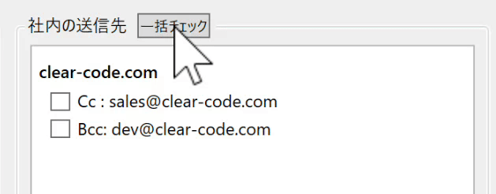
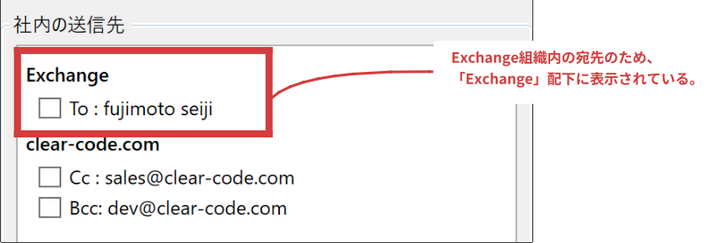
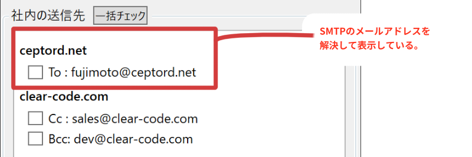
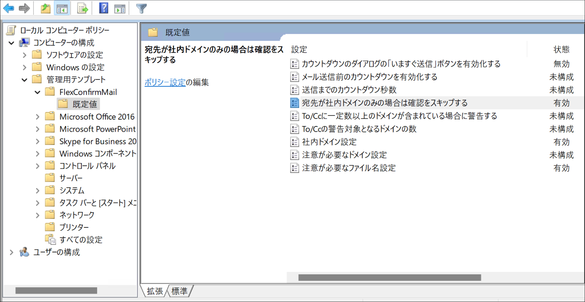
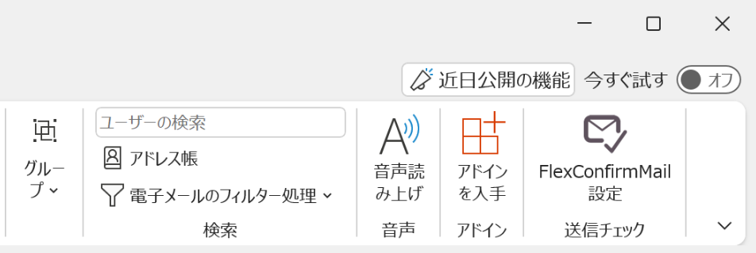
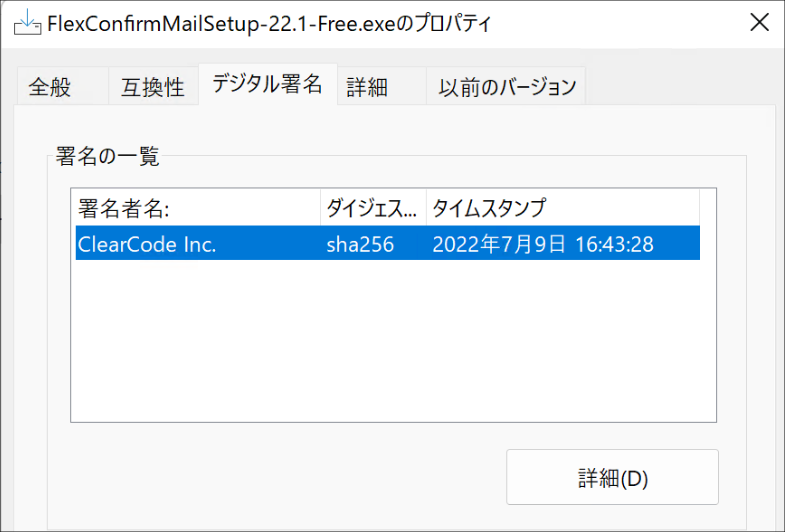

FlexConfirmMail v22.1リリースノート#
FlexConfirmMail v22.1は2022年7月9日にリリースされたバージョンです。
新機能#
1. 社内の宛先に「一括チェック」ボタンを追加しました#
メール送信時の確認画面に「一括チェック」ボタンを追加しました。 このボタンをクリックすることで、社内の宛先を一括で選択状態にできます（下図）
{kind=link}

2. LegacyExchangeDNアドレスに対応しました#
LegacyExchangeDNとは、Exchangeが定める独自形式のアドレスで、 Active Directory組織のメンバーを一意に識別するアドレスです。
Exchangeは、組織内の宛先については、通常のSMTPのメールアドレス (foo@example.com) ではなく、
このアドレスを利用して送受信を行います:
/o=FlexConfirmMail/ou=Exchange/cn=Recipients/cn=n000000-fujimoto
これまでのリリースでは、LegacyExchangeDNアドレスの宛先については、 「Exchange」という独立の表題にまとめて表示していました。
{kind=link}

今回のリリースから、LegacyExchangeDNのアドレスは、 対応するSMTPのメールアドレスを解決して表示するようになりました。
{kind=link}

3. GPOで既定値を管理できるようになりました（エンタープライズ版）#
エンタープライズ版について、グループポリシーで各設定の既定値を 制御できるようになりました。
{kind=link}

バグ修正#
1. アンダースコアの表示を改善しました#
メールアドレスや添付ファイル名にアンダースコア文字が含まれる場合に、 表示が崩れる問題を修正しました。
2. Intel GPUのドライバ不具合に対応しました#
Windows 10 + Intel GPUドライバの組み合わせで、FlexConfirmMailの画面が白紙になる問題を解消しました。
その他#
1. FlexConfirmMailのアイコン位置が右端になりました#
従来、FlexConfirmMailの「ホーム」タブのアイコンは「返信」グループの右隣に表示されていましたが、 本バージョンからタブの末尾に表示されるようになりました。
{kind=link}

2. インストーラにデジタル署名を追加しました#
これまではエンタープライズ版のインストーラについてのみ、 開発元のクリアコードの署名を付していました。
今回のリリースから、公開版のインストーラについてもデジタル署名を付与して配布しています。
{kind=link}
